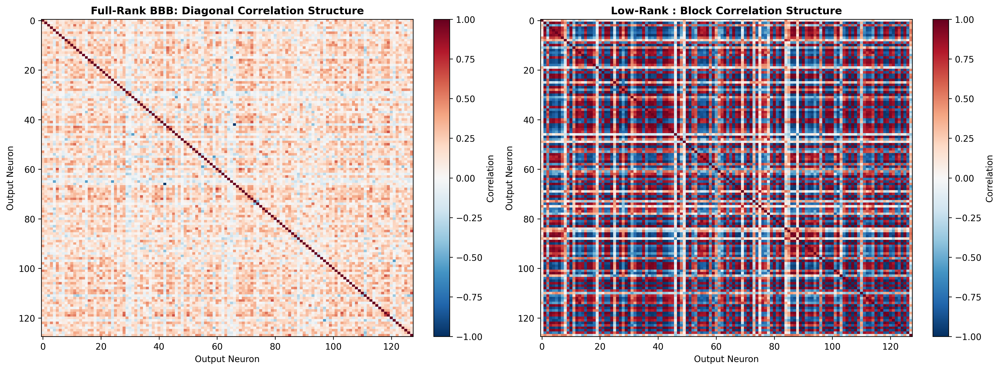
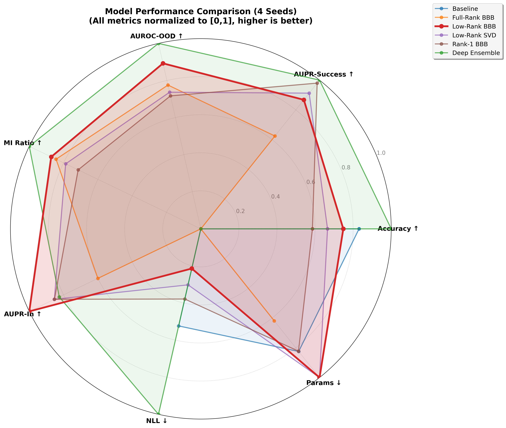

Low-rank Bayesian posteriors concentrate on rank-constrained manifolds.
TL;DR
We parameterize Bayesian neural network weights through low-rank
factors $W = AB^\top$, inducing a singular posterior geometry
concentrated on the rank-$r$ manifold. This reduces variational
complexity from $O(mn)$ to $O(r(m+n))$ while maintaining
competitive uncertainty-aware performance across MLPs, LSTMs, and Transformers.
01
What this paper shows
Low-rank variational BNNs do not merely save parameters —
they change the geometry, covariance structure, and complexity of the posterior.
Method
End-to-end variational learning over low-rank factors $W = AB^\top$, trained from scratch without pretrained backbones.
Geometry
The induced posterior $q_W$ is a pushforward measure supported on the rank-$r$ manifold $\mathcal{R}_r \subset \mathbb{R}^{m \times n}$.
Singularity
$q_W$ is singular with respect to Lebesgue measure on the ambient weight space — a formal, measure-theoretic result.
Correlations
Mean-field factors over $A, B$ still induce structured, non-trivial covariance between entries of $W$ through shared latent dimensions.
Theory
Three certificates: approximation error (Eckart–Young–Mirsky), PAC-Bayes generalization bounds, and Gaussian complexity transfer.
Evidence
Validated on MLPs (MIMIC-III), LSTMs (Beijing PM₂.₅), and Transformers (SST-2) with OOD evaluation on domain-shifted test sets.
Core thesis: low-rank is not merely parameter economy — it changes posterior support,
covariance, and capacity.
02
Motivation
Bayesian neural networks provide principled uncertainty, but full weight-space
inference does not scale. Three obstacles block practical deployment.
O(mn)
Parameter explosion
Standard mean-field MFVI requires 2 variational parameters per weight — doubling the parameter count per layer, scaling as $O(mn)$ for a single matrix.
2×
Independence assumption
Fully factorized posteriors ignore structured correlations between weights, limiting expressiveness and the model's ability to represent epistemic uncertainty coherently.
5×
Ensemble cost
Deep Ensembles — the practical gold standard — require 5 full model copies, making them prohibitively expensive for Transformer-scale architectures.
Key gap: No prior work trains low-rank BNNs end-to-end across diverse architectures
(MLPs, LSTMs, Transformers) with rigorous theoretical guarantees on posterior geometry.
What existing low-rank methods miss
This paper is not LoRA with uncertainty pasted on top.
The novelty is the induced posterior measure over $W$: its support, geometry, covariance, and complexity all change.
Approach
Backbone
Posterior object
What is missing
Post-hoc perturbations
Pretrained
Noise around fixed weights
Not end-to-end uncertainty
Low-rank covariance
Full $W$ means
Covariance approximation
Still O(mn) weight means
Bayesian LoRA
Pretrained / fine-tuning
Adapter uncertainty
Not from-scratch BNN training
SBNN (ours)
From scratch
Singular $q_W$ on rank-$r$ support
Pushforward posterior
03
Core idea
From mean-field to structured low-rank geometry
Standard Bayesian neural networks often rely on fully factorized
posteriors that ignore structured correlations between weights.
We instead introduce low-rank variational factors:
$$A \in \mathbb{R}^{m \times r}, \qquad
B \in \mathbb{R}^{n \times r}, \qquad
W = AB^\top.$$
Although the factors themselves can be mean-field,
the induced posterior over $W$ becomes highly structured,
introducing correlations through shared latent factors.
Optimized via the reparameterization trick (Bayes by Backprop) with Adam —
implemented as drop-in Keras layer replacements for dense layers, LSTM gates,
and Transformer projections.
Complexity$O(r(m+n))$
instead of $O(mn)$
Posterior supportrank-$r$ manifold
singular in ambient matrix space
When $r < \min(m,n)$, the posterior is supported on the rank-at-most-$r$
set $\mathcal{R}_r$, which has Lebesgue measure zero in the ambient
matrix space.
Parameter scaling
$$O(mn)\quad \longrightarrow \quad O(r(m+n)).$$
This is the computational reason the method can scale better than full-rank
Bayesian weight-space inference.
PAC-Bayes scaling
$$\sqrt{\frac{r(m+n)}{mn}}.$$
The low-rank complexity term becomes smaller when
$r \ll \min(m,n)$.
Shared latent factors induce non-zero covariance between weight entries,
even though the factor posterior itself is mean-field. Rank $r$ controls
how expressive these correlations can be.
05
Theory
The paper provides three theory certificates, not one.
Each addresses a distinct aspect of the low-rank posterior's behaviour.
The loss gap between the optimal full-rank $W^\star$ and its best rank-$r$
approximation $W_r^\star$ is controlled by the tail singular values.
Rapid spectral decay means small rank-induced bias.
The BNN predictive mean lies in the closed convex hull of the support class.
Gaussian complexity is invariant under convex hull and closure,
so deterministic complexity bounds transfer to Bayesian predictive means.
Practical numbers for $m=n=512$ (relative complexity, lower is better):
25×
fewer at r=64
64×
fewer at r=16
128×
fewer at r=8

Induced correlation structure in low-rank Bayesian weights.
PAC-Bayes and Gaussian complexity perspectives on low-rank scaling.
Note the critical rank transition: both bounds decrease as rank drops.
06
Why rank is plausible
The rank-$r$ manifold is not an arbitrary bottleneck — it is a
structured approximation class supported by the empirical spectral
structure of learned neural network weights.
Observed singular value decay
Weight matrices in trained neural networks routinely exhibit fast singular
value decay: a small number of dominant directions captures most of the
representational capacity. This motivates the rank-$r$ manifold as a
natural approximation class rather than an artificial constraint.
EYM tail bound is tight in practice
The Eckart–Young–Mirsky bound controls rank approximation error through
tail singular values $\sigma_{r+1}^2(W^\star) + \cdots$. When layer
spectra decay quickly, these tails are small, and the rank-$r$ bias is
genuinely negligible.
Rank ablations confirm the effect
Experiments include SVD-initialized vs. randomly initialized low-rank
factors, and rank ablations across architectures. The SVD initialization
consistently outperforms random initialization, confirming that the model
exploits spectral structure.
Practical rank selection
Ranks are chosen per-architecture based on empirical validation:
$r=15$ for the MLP on MIMIC-III, $r=14/20$ for the LSTM on
Beijing PM₂.₅, and $r=16$ for the Transformer on SST-2.
Adaptive rank selection via sparse priors is a natural future direction.
Interactive
Parameter-count intuition
Move the rank slider to compare full-rank and low-rank parameterization
for a single $256 \times 256$ layer.
Full rank
65536
Low rank
8192
8× fewer parameters.
07
Experimental design
Three architectures. Three domain-shift scenarios. Six uncertainty baselines.
Each setting includes OOD evaluation on held-out distribution shifts.
Dataset
Architecture
In-distribution
OOD shift
Rank
Key metrics
MIMIC-III ICU mortality
2-layer MLP
40,406 adult ICU patients, 44 clinical features
Adult ICU → Newborn ICU (5,357 OOD)
r=15
AUROC, AUC-OOD, AUPR-OOD, AUPR-In, NLL, Params
Beijing PM₂.₅ forecasting
2-layer LSTM
29,213 train, 24-step windows
Beijing → Guangzhou (20,050 OOD)
r=14,20
MAE, ECE, PICP, AUROC-OOD, AUPR-OOD, Params
SST-2 sentiment
4-layer Transformer (d=256)
67,349 train, 872 dev (movie reviews)
Movie reviews → AG News (7,600 OOD)
r=16
Accuracy, NLL, AUROC-OOD, MI Ratio, AUPR-In, Params, Time
Baselines compared:
Deterministic · Deep Ensemble (M=5) · Full-Rank BBB · Low-Rank (random init) · Low-Rank (SVD init) · Rank-1 Multiplicative · SWAG (supplementary).
All Bayesian models optimized with Adam via the reparameterization trick. SWAG is included as a strong scalable posterior baseline in the appendix.
08
Experimental highlights
MIMIC-III ICU mortality
Best reported OOD detection metrics in the clinical-shift setting
Competitive in-domain performance with explicit uncertainty tradeoffs
70% fewer parameters than Full-Rank BBB; 88% fewer than Deep Ensemble
Beijing PM$_{2.5}$ forecasting
Best coverage among compared LSTM uncertainty methods
17.4% MAE reduction at 80% retention in selective prediction
64% fewer parameters than Full-Rank BBB
SST-2 Transformer
Best AUPR-In and second-best AUROC-OOD among Transformer methods
1.5M parameters for Low-Rank BBB
13× fewer parameters than Full-Rank BBB; 33× fewer than Deep Ensemble

08b
Detailed empirical evidence
We evaluate Singular BNNs across tabular, time-series, and Transformer settings.
The goal is not a single universal win, but a quality-efficiency tradeoff:
structured Bayesian uncertainty with far fewer parameters.
MIMIC-III: low-rank gives the strongest OOD uncertainty
Model
AUROC ↑
AUPR-Err ↑
AUC-OOD ↑
AUPR-OOD ↑
AUPR-In ↑
NLL ↓
Params ↓
Deterministic
.922
.145
.500
.544
.456
.284
22.4k
Deep Ensemble
.929
.237
.738
.754
.721
.300
112k
Full-Rank BBB
.895
.412
.770
.759
.807
.401
44.8k
Low-Rank BBB
.895
.540
.802
.788
.824
.433
13.6k
Low-Rank BBB uses 70% fewer parameters than Full-Rank BBB and 88% fewer than a 5-member Deep Ensemble.
Beijing PM₂.₅: strongest coverage and selective prediction
Model
MAE ↓
ECE ↓
PICP ↑
AUROC-OOD ↑
AUPR-OOD ↑
Params ↓
Deterministic
10.79
—
—
.500
.500
33K
Full-Rank BBB
10.55
.111
.788
.492
.743
132K
Low-Rank BBB
10.63
.114
.790
.710
.861
47K
Deep Ensemble
10.45
.317
.310
.730
.883
330K
At 80% retention, Low-Rank BBB achieves 17.4% MAE reduction through selective prediction.
At 80% retention, Low-Rank achieves MAE of 8.71 vs 9.21 for Deep Ensemble,
demonstrating that structured correlations improve selective prediction quality.
SST-2 Transformer: scalable Bayesian uncertainty
Model
Acc ↑
NLL ↓
AUROC-OOD ↑
MI Ratio ↑
AUPR-In ↑
Params ↓
Time
Deterministic
.812
.490
.500
.000
.102
9.9M
7.7 min
Deep Ensemble
.825
.434
.657
1.55
.267
49.6M
64.7 min
Full-Rank BBB
.752
.552
.622
1.31
.222
19.8M
23.1 min
Low-Rank BBB
.806
.527
.640
1.35
.302
1.5M
8.2 min
Low-Rank BBB uses 13× fewer parameters than Full-Rank BBB and 33× fewer than Deep Ensemble, training in 8.2 min vs 64.7 min for Deep Ensemble.
Low-Rank BBB achieves comparable or better wall-clock performance with dramatically fewer parameters
and roughly half the peak memory of Full-Rank BBB.
SWAG comparison
SWAG is a strong scalable posterior baseline, but the appendix comparisons do not overturn the
low-rank quality-efficiency tradeoff. On SST-2, SWAG reaches 0.808 accuracy but uses 208.37M
parameters, compared with 1.47M for Low-Rank BBB. On MIMIC-III, SWAG is stronger on in-domain
AUROC and NLL but weaker on MI-based OOD separation (0.634/0.680 vs 0.802/0.788).
On Beijing, SWAG has high coverage but much wider intervals and weaker OOD detection.
Setting
SWAG strength
Low-rank advantage
SST-2
Accuracy tied (0.808 vs 0.806)
1.47M params vs 208.37M; better OOD
MIMIC-III
Higher in-domain AUROC / NLL
OOD MI metrics: 0.802/0.788 vs 0.634/0.680
Beijing PM₂.₅
Higher raw coverage
Much narrower intervals; stronger OOD for low-rank
09
Key insights
Calibration – OOD detection tradeoff
A consistent pattern emerges across all three tasks: the rank constraint trades predictive
sharpness (NLL) for broader epistemic uncertainty — which benefits OOD detection, abstention,
and coverage.
MIMIC-III
Low-rank improves OOD detection despite weaker NLL than Deep Ensembles. Structured uncertainty outperforms under clinical domain shift.
SST-2
Deep Ensemble is stronger on both NLL and OOD. Low-rank remains competitive at 33× fewer parameters — an entirely different efficiency regime.
Beijing PM₂.₅
Low-rank achieves best calibration, coverage, and selective prediction. OOD advantage is secondary to interval quality.
Hypothesis: The rank constraint on $\mathcal{R}_r$ enforces structured weight
correlations (Lemma 3.2) that maintain broader epistemic uncertainty distributions. This benefits
abstention, coverage, and OOD awareness at the cost of predictive sharpness (NLL).
The tradeoff is task-dependent, with OOD-critical settings (e.g. clinical shift in MIMIC-III)
favoring the low-rank posterior.
Low-rank ensembling
Ensembling five low-rank members further improves all uncertainty metrics, showing the two
techniques are complementary.
0.638 → 0.731
+0.093
AUROC-OOD
0.166 → 0.054
−0.112
ECE (lower is better)
0.523 → 0.415
−0.108
NLL (lower is better)
Honest takeaway
The empirical message is not compression alone — and it is not that low-rank always wins every metric.
Where low-rank shines
OOD separation on MIMIC; coverage and selective prediction on Beijing; efficiency-adjusted uncertainty on SST-2. Useful uncertainty under shift and deployment constraints.
Where ensembles remain strong
In-distribution likelihood and predictive sharpness can favor Deep Ensembles. Calibration gaps remain in some settings. SWAG is a credible high-parameter baseline.
Why it matters
Trustworthy AI often needs useful uncertainty under shift, abstention, and deployment constraints — not only marginal NLL. SBNNs make that goal practical at modern scales.
10
Future directions
This work establishes singular posterior geometry as a principled and scalable
framework. Several natural extensions open from here.
Adaptive rank selection
Ranks chosen by spectra, validation tradeoffs, or sparse priors (e.g. spike-and-slab) rather than fixed grids. Per-layer rank scheduling could further reduce parameter count.
Bayesian Transformers at scale
Extending the framework to large language models and vision transformers. The $O(r(m+n))$ scaling makes this more tractable than full-rank Bayesian inference.
Beyond Gaussian factors
Laplace, spike-and-slab, and richer factor distributions while keeping singular support. Non-Gaussian factors can represent multi-modal posterior landscapes.
Trustworthy AI applications
Uncertainty that supports abstention, calibrated coverage, OOD awareness, and constrained deployment in safety-critical domains such as clinical decision support and autonomous systems.